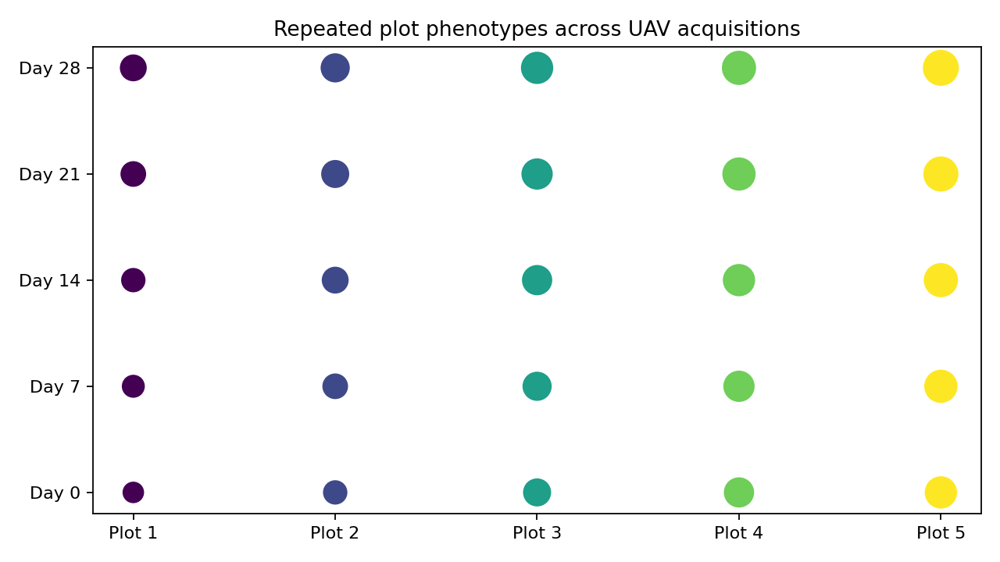

OmniPhenoR UAV Time Series: Plot Identity Across Repeated Flights
Source:vignettes/v30-uav-time-series.Rmd
v30-uav-time-series.RmdPurpose
Repeated UAV acquisitions can provide canopy cover, spectral indices, texture, height, disease, and stress traits at the plot level. The main longitudinal challenge is not only image processing. It is ensuring that the same experimental plot is linked correctly across acquisition dates while coordinate systems, orthomosaic boundaries, and image quality can change. Field high-throughput phenotyping requires integration of sensing with experimental and environmental information (Araus and Cairns 2014).

1. Canonical plot-level table
A recommended post-extraction table has one row per plot × acquisition × trait:
uav_long <- data.frame(
plot_id = rep(sprintf("plot_%02d", 1:20), times = 5),
day = rep(c(0,7,14,21,28), each = 20),
trait = "canopy_cover",
value = runif(100, .2, .9),
block = rep(rep(1:4, each=5), times=5)
)The raster itself is not the statistical unit. Plot identity is.
2. Build a plot pheno_series
d <- subset(pheno_data("growth_series"), trait == "leaf_area")
# teaching substitute: treat plant_id as plot_id
s <- pheno_series(
d,
id = "plant_id",
time = "day",
trait = "trait",
value = "value",
group = c("block", "treatment")
)
s
#> <pheno_series>
#> rows: 60
#> subjects: 12
#> traits: 1
#> time range: 0 to 28The same grammar applies to plants in a chamber and plots in an orthomosaic.
3. Validate plot identity before temporal modeling
pheno_series_validate(s)
#> # A tibble: 4 × 3
#> check pass detail
#> <chr> <lgl> <chr>
#> 1 duplicate subject-time-trait TRUE FALSE
#> 2 complete identity TRUE FALSE
#> 3 finite numeric values TRUE TRUE
#> 4 within-series order TRUE TRUEFor real UAV workflows, also verify CRS, plot-polygon uniqueness, acquisition date, and whether plot geometries were reused or regenerated.
4. Align acquisitions
pheno_time_align(
s,
grid = seq(0,28,by=7),
method = "exact"
)
#> <pheno_series>
#> rows: 60
#> subjects: 12
#> traits: 1
#> time range: 0 to 28Exact alignment is preferred when the experiment has coordinated flight dates. Interpolation should not compensate for incorrect plot matching.
5. Environmental linkage
w <- pheno_data("weather_series")
joined <- pheno_weather_join(
d,
w,
pheno_time = "day",
weather_time = "day",
by = "environment"
)
head(joined)
#> environment day plant_id treatment block date.x trait value
#> 1 E1 0 P01 control 1 2026-05-01 leaf_area 14.49367
#> 2 E1 0 P09 drought 1 2026-05-01 leaf_area 18.59801
#> 3 E1 0 P04 control 4 2026-05-01 leaf_area 19.16524
#> 4 E1 0 P12 drought 4 2026-05-01 leaf_area 16.97905
#> 5 E1 0 P07 nitrogen 3 2026-05-01 leaf_area 16.36706
#> 6 E1 0 P02 control 2 2026-05-01 leaf_area 15.71294
#> date.y tmin tmax tmean rain vpd soil_moisture
#> 1 2026-05-01 18 30 24 0 1.2 0.28
#> 2 2026-05-01 18 30 24 0 1.2 0.28
#> 3 2026-05-01 18 30 24 0 1.2 0.28
#> 4 2026-05-01 18 30 24 0 1.2 0.28
#> 5 2026-05-01 18 30 24 0 1.2 0.28
#> 6 2026-05-01 18 30 24 0 1.2 0.28Weather can explain trajectory differences that would otherwise be attributed only to genotype or treatment.
6. Dynamic plot traits
pheno_tidy(
d,
subject = "plant_id",
time = "day",
value = "value"
)
#> # A tibble: 12 × 5
#> subject auc minimum maximum max_slope
#> <chr> <dbl> <dbl> <dbl> <dbl>
#> 1 P01 1878. 14.5 117. 5.07
#> 2 P02 1878. 15.7 112. 5.53
#> 3 P03 1916. 14.6 115. 5.94
#> 4 P04 1921. 19.2 117. 5.59
#> 5 P05 1984. 15.9 121. 6.35
#> 6 P06 2051. 16.5 124. 5.80
#> 7 P07 2045. 16.4 120. 6.00
#> 8 P08 2036. 17.7 119. 6.16
#> 9 P09 1754. 18.6 106. 4.92
#> 10 P10 1774. 14.9 108. 5.34
#> 11 P11 1719. 15.7 102. 5.47
#> 12 P12 1768. 17.0 104. 5.47For canopy cover, useful summaries can include cumulative cover AUC, maximum cover, maximum expansion rate, and time to canopy closure.
7. Functional plot trajectories
f <- pheno_functional(d,"plant_id","day","value")
fp <- pheno_fpca(f,2)
head(fp$scores)
#> # A tibble: 6 × 3
#> id PC1 PC2
#> <chr> <dbl> <dbl>
#> 1 P01 -0.376 -5.70
#> 2 P02 -1.10 0.657
#> 3 P03 1.95 0.637
#> 4 P04 2.30 -1.62
#> 5 P05 10.1 0.988
#> 6 P06 15.0 -1.44Functional scores can summarize complex trajectory shape, but spatial field structure still belongs in the downstream experimental model.
8. Flight-quality effects
Repeated UAV phenotypes can be affected by:
- illumination;
- cloud/shadow;
- wind-induced canopy movement;
- flight altitude;
- ground sampling distance;
- orthomosaic reconstruction quality;
- radiometric calibration;
- plot boundary misregistration.
These factors should be QC variables rather than silently absorbed into biological variation.
9. Missing plots versus missing flights
A missing entire flight is a date-level gap. A missing plot on one orthomosaic is a plot-level extraction failure. They have different statistical implications. Record the reason for missingness if known.
10. Repeated-measures inference
m <- pheno_repeated(
d,
response = "value",
time = "day",
treatment = "treatment",
subject = "plant_id",
block = "block",
engine = "lm"
)
m
#> <pheno_repeated_fit> lm
#> correlation: independence
#> response: value time: day subject: plant_idFor real UAV field trials, more complex spatial or genotype × environment models may be appropriate and can remain downstream of OmniPhenoR’s standardized longitudinal table.
Reporting checklist
Report sensor/platform, flight dates/times, GSD, calibration, orthomosaic software, plot geometry source, CRS, plot matching strategy, QC exclusions, image-derived trait algorithm, time scale, weather linkage, missing flights/plots, dynamic trait derivation, and statistical experimental unit.
Final perspective
The scientific value of UAV time series comes from maintaining a stable bridge between pixels, plots, acquisition dates, environment, and experimental design. OmniPhenoR’s 0.4.0 temporal objects are designed to preserve that bridge.
Extended worked interpretation
Temporal UAV phenotyping combines measurement uncertainty with geospatial registration uncertainty. If a plot polygon shifts by only a few pixels between orthomosaics, edge soil or neighboring canopy can enter the extracted region and mimic biological change. Stable plot geometry and coordinate reference systems are therefore part of longitudinal QC, not merely GIS housekeeping.
Repeated flights can also differ in illumination, altitude, camera settings or mosaicking behavior. Traits based on geometry may tolerate some radiometric variation, whereas RGB color indices can be strongly affected. Calibration choices should be recorded alongside the time series and tested with stable reference targets where possible.
When one flight is missing, interpolation may be acceptable for visualization but not automatically for every inferential model. Preserve an acquisition-status flag so the final dynamic trait can be traced back to observed versus reconstructed dates.